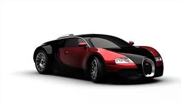
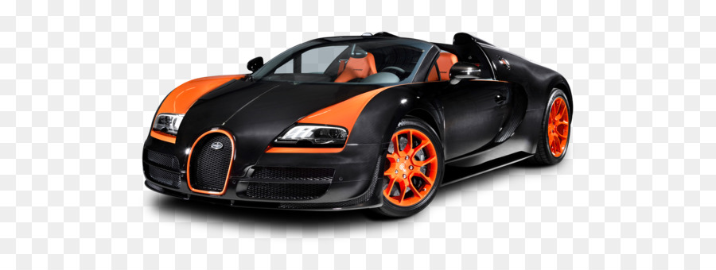
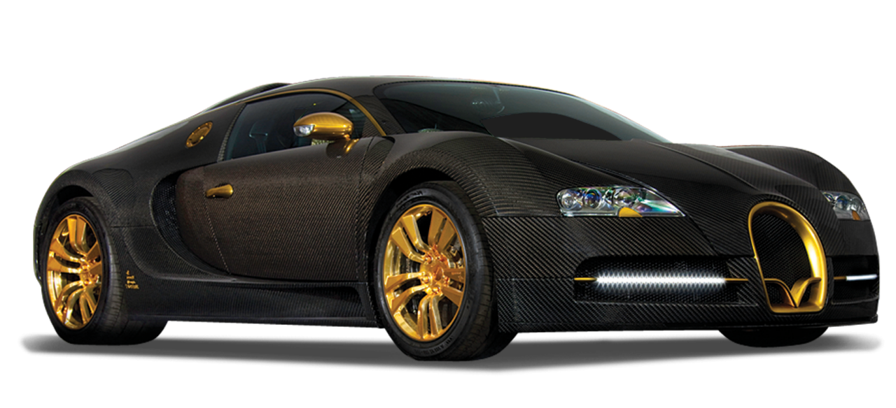

Our Post Title
Lamborghini is an Italian car brand known for manufacturing some of the most luxurious sports cars in the market. Typical Lamborghinis go for about $200,000. Luxurious does mean that there is a heavy price tag associated with the brand. We got take the 2016 Lamborghini Huracan LP580-2 for a spin around New York. With a base price of $199,805, it's technically the cheapest Lamborghini on the market. The car we drove came outfitted with options that drove its price upwards of $261,000. However, what is most interesting is the much-talked and known the world's largest car collection by the ruler of Brunei, none other than Sultan Hassanal Bolkiah. The man is the most prominent car collector with over 5000 cars, which have a combined worth of 2.3 trillion.
Our Post Title
Ferraris can cost anywhere from about $200,000 to over $300,000 per car (much, much more for classic models sold at auction or limited edition cars).Fiat S.p.A. acquired 50% of Ferrari in 1969 and expanded its stake to 90% in 1988. In October 2014 Fiat Chrysler Automobiles N.V. (FCA) announced its intentions to separate Ferrari S.p.A. from FCA; as of the announcement FCA owned 90% of Ferrari.Originally Answered: Why does Ferrari is so expensive? Their production number is relatively low, so they have to raise the price in order to keep the company running, otherwise, they will start to lose money and go bankrupt. They are built with exclusive materials such as selected leather from special cows in Holland.
Our Post Title
The cost of a Bugatti, a French luxury car with only three models — Veyron, Chiron and Divo — typically ranges from $1.7 million to $3 million, and its newest Divo hypercar model, which sold out in one day, has a ticket price of $5.8 million.If transportation with a six-figure price isn't exclusive enough for your tastes, there's the 2020 Bugatti Chiron. The Chiron costs almost $3 million, and it's about as exotic as hypercars get.As of 6 August 2014, 405 cars have been produced and delivered to customers worldwide, with orders have already been placed for another 30. Bugatti was reported to produce 300 coupés and 150 roadsters up to the end of 2015. Production amounted to 450 units in a span of over 10 years.